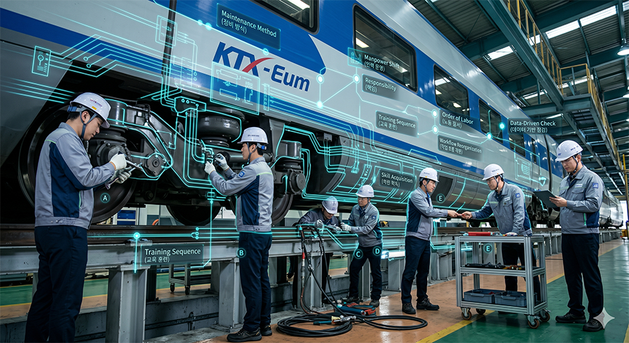
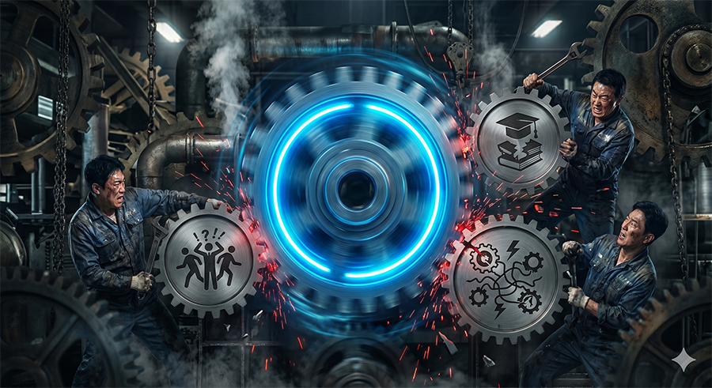
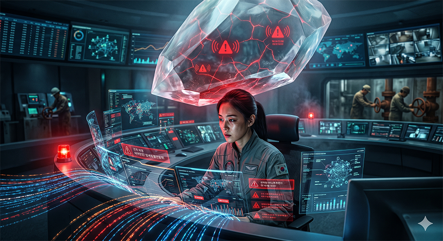
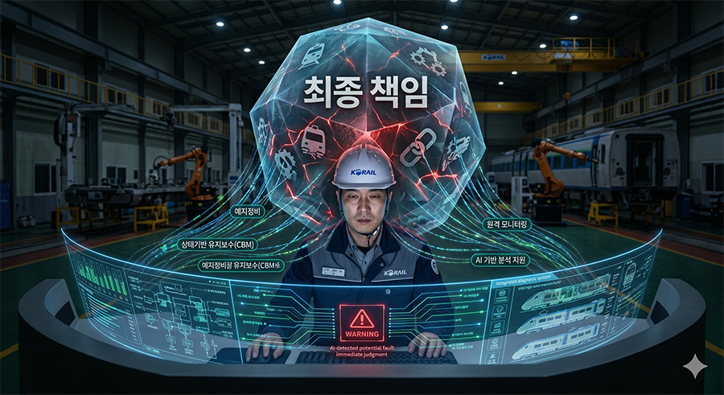
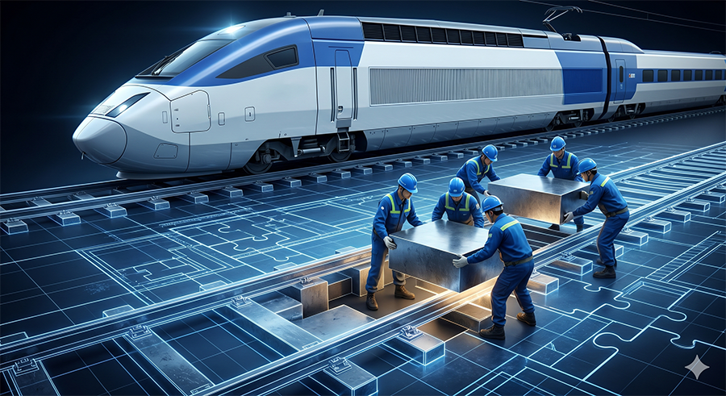
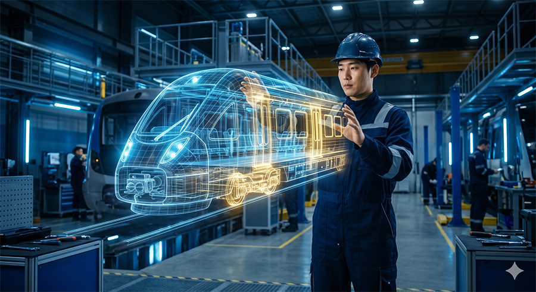
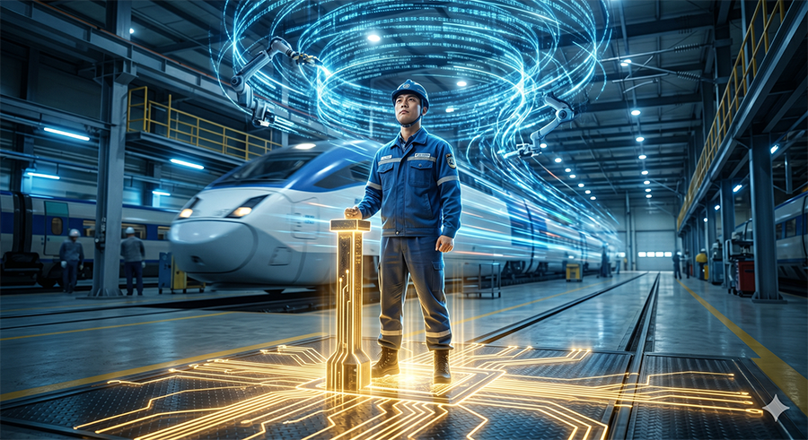

고속철도 현장에 새로운 차종이 들어온다는 말은 얼핏 들으면 단순한 차량 교체처럼 들립니다. 그러나 현장에서 일하는 노동자의 눈으로 보면 이야기는 전혀 다릅니다. 그것은 차량만의 변화가 아니라 정비 방식의 변화이고, 교육훈련 방식의 변화이며, 인력 운영의 변화이고, 결국에는 노동의 질서 자체가 다시 짜이는 문제이기 때문입니다. 지금 우리 앞에 다가온 전기동차(Electric Multiple Unit, EMU)의 시대가 바로 그렇습니다.
새로운 기술은 늘 더 효율적이고, 더 정교하고, 더 편리하다는 말과 함께 들어옵니다. 사용자는 언제나 기술을 진보의 언어로 설명합니다. 실제로도 기술의 발전이 필요한 경우는 분명히 있습니다. 문제는 그 다음입니다. 그 효율이 누구에게 돌아가는가, 그 변화의 비용은 누가 감당하는가, 그리고 기술 변화 이후 남겨진 노동은 과연 더 나아지는가 하는 질문은 늘 뒤로 밀려납니다. 철도도 예외가 아닙니다. EMU 도입은 차량의 변화이지만, 동시에 고양고속차량지부 현장 노동이 앞으로 어떤 방향으로 재편될 것인가를 가늠하게 하는 신호이기도 합니다.

지금 고양 현장이 맞이하고 있는 변화의 핵심은 단순한 신차 배치가 아닙니다. 공사 물량과 에스알(SR) 물량을 포함한 EMU 도입은 앞으로의 정비물량, 배속기 운영, 검수 방식, 교육 체계, 시설 개량 문제를 한꺼번에 끌고 들어옵니다. 더구나 기존 로템 유지보수 계약 물량까지 철도공사 정비체계로 이관되는 흐름까지 겹치면, 고양고속차량지부는 그야말로 고속철도차량 정비체계 변화의 중심에 서게 됩니다.
문제는 새로운 차량이 들어온다고 해서 현장의 정비체계가 저절로 정리되지 않는다는 점입니다. 지금까지 고속차량 정비는 전기, 기계, 차체 등 파트별 분업과 숙련을 바탕으로 굴러가 왔습니다. 그런데 EMU는 그 특성상 통합 검수와 통합적 판단을 훨씬 더 강하게 요구합니다. 기존 파트별 검수체계와 새로운 통합 검수체계가 한동안 함께 존재하게 되면, 현장에서는 누가 어떤 범위를 맡을 것인지, 어느 시점에 어느 팀의 책임이 되는지, 기존 주기·일상 인력은 어떻게 재배치될 것인지와 같은 문제가 연쇄적으로 발생할 수밖에 없습니다.
결국 EMU 도입은 새로운 차량을 배우는 문제를 넘어, 우리가 지금까지 익숙하게 일해 왔던 방식 전체를 흔드는 변화입니다. 정비의 흐름이 바뀌고, 교육의 순서가 바뀌고, 현장 인력의 경계가 바뀌며, 그 과정에서 노동강도와 책임의 무게도 함께 다시 배분됩니다. 그러므로 이 문제를 "신차 들어오면 배우면 되는 것 아니냐"는 식으로 가볍게 볼 수는 없습니다.

바로 여기서 우리는 EMU 문제를 더 넓은 기술 변화의 흐름 속에서 볼 필요가 있습니다. 왜냐하면 지금 현장에서 벌어지는 일은 철도만의 특수한 사례가 아니라, 이미 다른 산업에서 반복되어 온 기술 도입의 전형적인 경로와 닮아 있기 때문입니다.
기술은 흔히 사람의 일을 덜어준다고 말합니다. 그러나 실제 현장에서 반복해서 확인된 것은, 기술이 일의 양을 단순히 줄이는 것이 아니라 일의 형태를 바꾸고, 남은 사람의 책임을 압축한다는 사실이었습니다. 일이 쉬워지는 것이 아니라, 일상적인 반복노동의 일부가 기계로 넘어간 자리에 더 넓은 감시, 더 높은 집중, 더 무거운 최종 책임이 인간에게 남게 되는 것입니다.
예를 들어 정수장과 같은 공공 인프라 영역을 보더라도, 감시 제어 및 데이터 수집(Supervisory Control And Data Acquisition, SCADA) 시스템의 확대는 소규모 설비를 대형화·집중화하고, 실시간 제어와 계측을 통해 적은 인원으로 넓은 범위를 관리하는 방향으로 진행되어 왔습니다. 겉으로 보기에는 사람이 현장을 일일이 뛰어다니지 않아도 되고, 화면을 통해 더 많은 정보를 한 번에 볼 수 있으니 더 편해진 것처럼 보일 수 있습니다. 그러나 실제 노동은 그렇게 단순하지 않습니다. 상시적으로 화면과 경보를 감시해야 하고, 수많은 자동화 장치에 비례하는 각종 오동작과 거짓 경보 등 숱한 비정상 상황을 즉시 판단해야 합니다. 평상시에는 "버튼만 누르면 되는 일"처럼 폄하되지만, 정작 사고가 나면 기계는 책임을 지지 않습니다. 결국 남아 있는 소수 인력이 판단하고, 조치하고, 설명하고, 나아가 책임까지 져야 합니다.
석유화학 설비나 발전소의 분산제어시스템(Distributed Control System, DCS)도 크게 다르지 않습니다. 제어실의 화면은 더 정교해지고, 자동화는 더 촘촘해질수록 평상시 인원은 줄어듭니다. 그러나 남아 있는 노동자는 더 넓은 범위를 한꺼번에 감시해야 하고, 이상 징후가 발생하면 짧은 시간 안에 복합적인 계통을 동시에 판단해야 합니다. 자동화가 확대될수록 단순 반복노동은 줄어들 수 있지만, 남는 노동은 오히려 더 고도의 집중력과 더 큰 책임을 요구합니다. 사용자는 이 노동을 흔히 "모니터만 보는 일", "클릭 몇 번 하는 일"처럼 가볍게 말하지만, 실제로는 시스템 전체가 일탈하는 순간 모든 부담이 그 자리의 노동자에게 쏠리는 구조입니다.
이것이 중요한 이유는, 우리가 앞으로 철도에서 마주하게 될 미래 역시 크게 다르지 않을 가능성이 높기 때문입니다.

철도에서는 오랫동안 "그래도 최종 점검과 수리는 결국 인간의 영역"이라는 말이 일종의 안도처럼 받아들여져 왔습니다. 물론 지금 이 순간에도 그 말에는 일정한 진실이 있습니다. 고장의 원인 분석, 실제 수리, 예외 상황에 대한 판단, 계통 간 상호작용의 해석은 여전히 인간의 경험과 숙련에 크게 기대고 있습니다. 그러나 바로 그렇기 때문에 더 조심해야 합니다.
기술은 처음부터 인간을 완전히 대체하는 방식으로 들어오지 않습니다. 오히려 그 반대입니다. 먼저 업무를 세분화하고, 매뉴얼화하고, 체크리스트화하고, 데이터화합니다. 그리고 그다음 단계에서 일부 판단과 일부 감시, 일부 진단을 자동화해 갑니다. 이 과정에서 사용자 입장에서는 "사람을 완전히 없애지 않아도 더 적은 인원으로 더 넓은 범위를 관리할 수 있는 구조"가 만들어집니다. 다시 말해, 노동자가 사라지지 않더라도 노동자의 숫자는 줄고, 남아 있는 사람의 책임 범위는 더 커질 수 있습니다.
철도도 결국 그 방향으로 압박받을 가능성이 높습니다. 상태기반 유지보수(Condition Based Maintenance, CBM), 예지정비(Predictive Maintenance), 통합 진단 시스템, 원격 모니터링, 인공지능(AI) 기반 분석 지원 같은 기술은 모두 더 적은 인원으로 더 넓은 차량과 더 많은 데이터를 다루는 방향으로 작동하기 쉽습니다. 그러면 사용자는 정원 확대보다 효율화를 먼저 이야기하게 되고, 현장에서는 "예전보다 사람이 덜 필요하지 않느냐"는 논리가 슬며시 고개를 듭니다.
그러나 여기에는 기술이 결코 해결하지 못하는 본질적인 한계가 있습니다. 기계와 알고리즘은 오류를 낼 수 있어도 책임을 지지 않습니다. 자동화는 신호를 주고, 경고를 띄우고, 데이터를 정리할 수는 있지만, 사고가 발생했을 때 누가 판단했고 왜 놓쳤는지, 왜 대응이 늦었는지에 대한 책임은 결국 인간에게 돌아옵니다. 다시 말해, 자동화가 늘어날수록 노동자가 사라지는 것이 아니라, 줄어든 노동자에게 더 무거운 책임과 더 큰 처벌 가능성이 집중되는 구조가 강화될 수 있습니다. 이것이 바로 우리가 지금 기술 변화 앞에서 가장 경계해야 할 지점입니다.

그렇기 때문에 EMU 도입에 대한 우리의 대응은 단순한 기술 적응 차원에 머물러서는 안 됩니다. 중요한 것은 새 차를 받아들이느냐 마느냐가 아니라, 그 변화가 어떤 조건 위에서 진행되느냐입니다.
이미 현장에서는 인력 공백, 정원 미확보, 교육훈련의 부족, 매뉴얼 정비와 보수품 확보 문제, 시험기와 설비 부족, 교대인력 증가에 따른 숙소와 후생복지시설 문제, 검수선과 정비고 개량에 따른 노동환경 변화가 함께 제기되고 있습니다. 이 가운데 어느 하나라도 빠지면 기술 도입의 부담은 고스란히 현장 노동자 개인의 숙련과 헌신으로 메워질 수밖에 없습니다. 사용자는 그것을 두고 "현장이 잘 극복했다"고 말할지 모르지만, 노동자의 입장에서 보면 그것은 기술 적응이 아니라 조건 없는 버티기일 뿐입니다.

그렇다면 노동조합은 무엇을 해야 하겠습니까. 해답은 막연한 기술 거부에 있지 않습니다. 신기술을 무조건 부정하는 것은 현실적이지도 않고, 실제로 가능하지도 않습니다. 그러나 그렇다고 사용자가 정한 방식대로 기술을 그대로 받아들이는 것 역시 노동조합의 길일 수는 없습니다. 노동조합이 해야 할 일은 기술의 도입을 멈추는 것이 아니라, 기술이 어떤 조건 아래 들어올 것인지에 개입하는 것입니다.
정원이 먼저 확보되어야 하고, 교육훈련은 개인의 희생이 아니라 노동시간 안에서 보장되어야 하며, 자동화로 생긴 효율은 인력감축이 아니라 노동시간 단축과 안전인력 보강, 복지시설 확충으로 환원되어야 합니다. 감시와 데이터 수집이 확대된다면 그 범위와 목적, 평가와 징계에 미치는 영향을 노동조합이 분명히 통제해야 합니다. 자동화가 확대될수록 인간의 최종 책임이 더 무거워진다면, 그에 상응하는 권한과 인력, 휴식과 교육도 함께 보장되어야 합니다.
결국 문제는 기술이 아니라 힘의 관계입니다. 어떤 기술도 저절로 노동자를 지켜주지 않습니다. 기준을 세우지 않으면 기술은 사용자의 효율 논리로만 작동합니다. 그러나 노동조합이 개입하면 기술은 다른 방식으로도 쓰일 수 있습니다. 노동강도를 낮추고, 사고를 줄이고, 숙련을 지원하며, 더 인간다운 노동을 만드는 방향으로도 재설계할 수 있습니다. EMU 시대에 우리가 바꾸어야 할 것은 기계 그 자체가 아니라, 기술 변화 앞에서 노동이 밀리지 않도록 만드는 기준과 질서입니다.

EMU의 시대는 시작일 뿐입니다. 그 뒤에는 더 많은 자동화, 더 많은 데이터, 더 많은 감시, 더 많은 효율화 요구가 밀려올 것입니다. 사용자는 그것을 시대의 흐름이라고 부를 것이고, 노동자에게는 적응을 요구할 것입니다. 그러나 미래는 기계가 결정하지 않습니다. 그 미래가 누구의 논리로 설계되느냐에 따라 완전히 달라집니다.
효율의 이름으로 인력을 줄이고 책임을 몰아주는 미래도 있을 수 있고, 기술 발전의 성과를 안전과 휴식, 교육과 인간다운 노동으로 돌리는 미래도 있을 수 있습니다. 우리가 침묵하면 전자는 너무 쉽게 현실이 될 것입니다. 그러나 우리가 기준을 세우고 조건을 요구한다면, 적어도 기술 변화가 노동자의 희생 위에서만 굴러가도록 내버려 두지는 않을 수 있습니다.